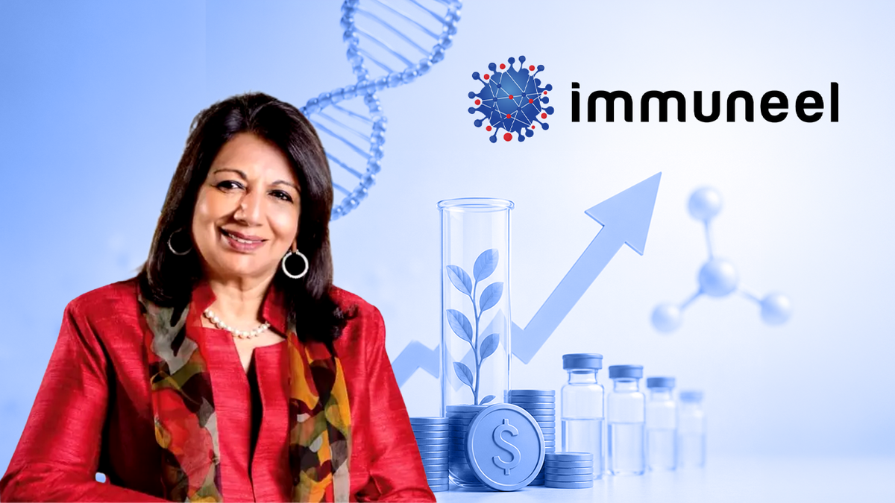

Truefan AI

AI · ₹96 CR · Series A · Delhi-NCR · Baring Private Equity Partners
The Setup
TrueFan AI builds an enterprise generative video platform that creates hyper-personalised AI videos featuring celebrities and brands, pivoting from its original 2020 model as a consumer celebrity-fan engagement app where users could request personalised celebrity video messages.
The Play
An interesting observation is that their new business model commoditizes the very reason for the failure of their first one: scarcity of celebrity attention. Zomato became the first customer in early 2024, and the platform scaled from five million to over twenty million videos annually within a year, targeting fifty million this year. What's interesting is their purely B2B model, which makes me wonder what exactly their moat is. Given the advent of open-source models, is what differentiates Truefan their proprietary technology, or their established enterprise relations (data governance, smooth integration, licensing and contract agreement)?
The Nuance
With 2 IIT Kharagpur alumni, former private equity CEO Nimish Goel and "AWS's Gen-AI disruptor award winner" Devender Bindal as CTO, the company has quite prolific leadership. My primary concern has nothing to do with the financials or the technology, however: given the regulatory-grey area their business model is working in, what happens if a celebrity doesn't like how their AI avatar is portrayed? In 2026, talent contracts in India increasingly include revocation clauses allowing actors to revoke consent if their AI avatar is used in sensitive categories (alcohol, tobacco, political ads) not previously disclosed. This is detrimental not only to Truefan itself but also to their customer who has publicized the content, which may lead to further repercussions. Giving credit where credit is due, I think the crown jewel of Truefan's business is the list of contracts they have set in place with A-league stars such as Shah Rukh Khan, Ranveer Singh, Alia Bhatt, etc., which is not easy to replicate for their competitors.
The Bet: Watching...
Immuneel Therapeutics

Biotech · 10.5M USD · Series B · Bengaluru · Dharana Capital
The Setup
Immuneel Therapeutics develops cell and gene therapies for cancer, and recently commercialised Qartemi, described as India's first approved CAR-T therapy for Non-Hodgkin Lymphoma and leukemia.
The Play
The West has already proven that CAR-T therapy works; the questions to be asked are whether India can build the manufacturing and regulatory infrastructure to make it accessible at Indian price points, and whether Immuneel gets there first. Qartemi's commercialisation is proof that Immuneel has gotten past arguably the hardest barriers: regulatory approval (CAR-T therapy requires extracting a patient's own T-cells, genetically engineering them, and reinfusing them, all while maintaining strict regulatory compliance) and distribution (hospital partnerships established). There is mention of expansion into the Asia Pacific and Middle East region, which, though exciting, raises a few questions: How will the logistics work? Will they be setting up internationally too, or do they plan on conducting the cell extraction abroad and then having a back-and-forth for the engineering and the rest of the process? Both options bring their own form of regulatory and infrastructural headaches.
The Nuance
The strongest aspect of Immuneel to me is the leadership: the company was founded in 2018 by Kiran Mazumdar-Shaw and Kush Parwar. Mazumdar-Shaw built Biocon into India's largest biopharma company over four decades. She is someone who has already proven she can navigate Indian regulatory pathways, manufacturing scale-up, and global pharma partnerships at the highest level, which to me is the hardest part of winning in biotech. Then we have Siddhartha Mukherjee, who is a Pulitzer-winning oncologist, which gives the company genuine scientific credibility in the cancer space. With cancer incidence rising in India and the West's hundred-thousand-dollar procedures, most Indians are already priced out. Immuneel being able to provide such advanced procedures at a fraction of the cost presents not only a sturdy moat to the business, but also a testament to India's capabilities. One question that I still have unanswered is the unit economics, and how they scale. Immuneel has raised 50M USD over 5 rounds, so it is a capital-intensive business, but the question is whether those funds went to one-time fixed costs for R&D and manufacturing, or whether they will be needing monthly installments of a few million dollars to keep the lights on. One thing to note is Rainmatter's participation. They have a pattern of backing companies at the intersection of access and infrastructure; their conviction here says more about distribution than the science, which I think has already proven credible.
The Bet: IN!
Wingreens
Packaged food and beverage · 12.6M USD · Series D · Delhi-NCR · Ashish Kacholia (Angel)
The Setup
Wingreens is a multi-brand better-for-you food and beverage platform operating Wingreens Farms, Raw Pressery, and newly acquired Safe Harvest, selling dips, juices, snacks, and health staples through online and offline channels.
The Play
The strategy seems to be aggregating health and sustainability-oriented food brands under one supply chain and distribution umbrella rather than building each from scratch. The Safe Harvest acquisition is particularly interesting because it brings 100,000 farmer relationships and a staples portfolio that complements Raw Pressery's premium beverage positioning. The new acquisition suggests Wingreens wants to 'own all things wellness', and I do see rising health consciousness and fitness becoming trendy in the Indian metros. My only concern is whether a single platform can serve both the Tier 1 consumer paying a premium for cold-pressed juice and the value-conscious buyer seeking certified pesticide-free pulses, because those are meaningfully different distribution and marketing problems.
The Nuance
Wingreens was founded by Anju Srivastava, who in 2008 started by renting half an acre of land from a farmer in Gurugram and growing culinary herbs, selling them at exhibitions for ₹150 a pot. Wingreens Farms reported a 50% increase in operating revenue for FY23, reaching INR 307 crore, but its net loss nearly doubled to INR 180 crore, up from INR 93 crore in FY22. This Series D isn't a young company raising to scale a working model faster; it's a decade-old company that went through a rough patch, used a value investor's capital and an acquisition to reposition itself, and is now signaling IPO ambitions. Ashish Kacholia (value investor) leading this round, rather than Investcorp who led the 2021 round, signals the softening institutional appetite. At INR 556 crore raised in total, Wingreens carries significant capital weight for a brand portfolio that has not yet demonstrated revenue scale to justify the numbers. All things being said and done, with the strategic pivot and new board composition, I wouldn't count Wingreens completely out.
The Bet: Watching...
The Week
Quite an interesting assortment this week, involving strategic pivots, proprietary technology, and prolific leadership. All in all, very promising ventures — Immuneel's case speaks for itself. Despite the similar verdict, TrueFan does warrant a much more confident watch than Wingreens; in fact, it would be bordering on an IN! if not for the IP and regulatory exposure that the future may present.
All Editions
W1 June 2026
Ctruh
Sahi
Snabbit
Sahi
Snabbit

Jay Roy
About me:
Hey everyone! I am Jay Roy, a first-year student at BITS Pilani. I am intrigued by startups, product and strategy, investing, and basically all things business. My hobbies include listening to music, saying I'll go to the gym daily then going twice a week, chess, eating good food, and despite what my friends would have you believe, I also enjoy talking to people. This is my first time creating publicly, so I am very open to feedback/suggestions on anything you see here.
About this site:
What's the Bet? is a weekly snapshot of the Indian startup ecosystem: three recently funded companies, one early stage, one mid stage, one late stage, every week. Each edition is deliberately kept under ten minutes, with a glossary for the jargon. Written for the curious, without compromising on quality for the enthusiasts. Nothing published here constitutes financial advice — these are personal opinions and should be read as such.
Feel free to reach out at f20250034@pilani.bits-pilani.ac.in.
LinkedIn: linkedin.com/in/jay-roy
The Framework
Every startup is analyzed through a 4-legged framework. I don't want to quantify each metric with a rating, as I feel that could make the process too rigid, but I will roughly go over these 4 parameters in each of my analyses.
Founder — Does the team have the domain knowledge, execution history, and personal credibility to pull this off?
Moat — Looking for structural advantages: network effects, switching costs, proprietary data/technology, or distribution that's hard to replicate.
Timing & Market — Is the world set up for this to win right now? This covers market size, regulatory conditions, and whether the problem is urgent enough for people to actually change their behaviour.
Commercial Clarity — How does the business hold up at scale? Is there a clear path to positive margins?
The weightage of each metric varies with each case — for example, a pre-seed deep-tech company would draw more weightage to its moat or founder's expertise, whereas a quick-commerce unicorn raising a Series D would be evaluated more strictly on macro factors and their strategy going forward.
The Verdicts
IN!
The thesis is compelling. I'd back it.
Watching...
Not entirely sure yet, but optimistic...
Unconvinced.
No go.
A week doesn't necessarily produce one of each — I might go two INs and an Unconvinced, or three Watching. The verdicts are strictly based on the startups, not a quota.